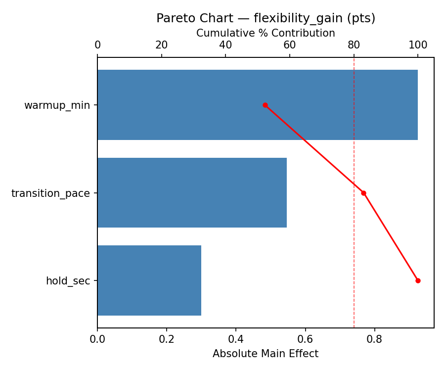
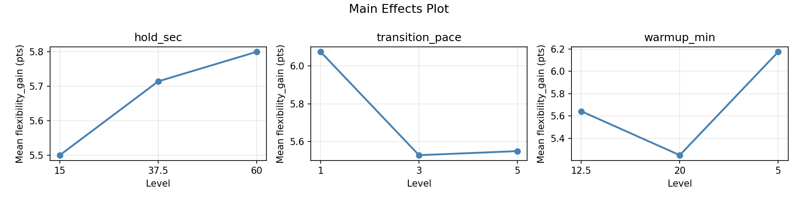
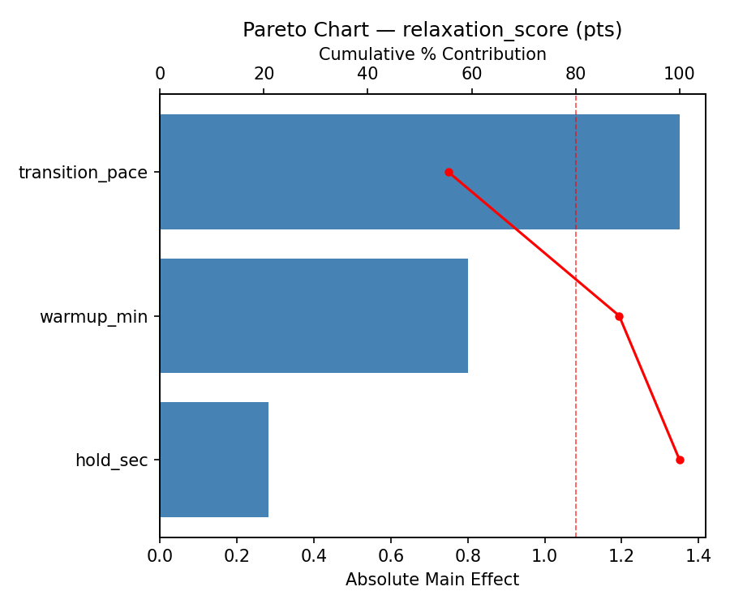
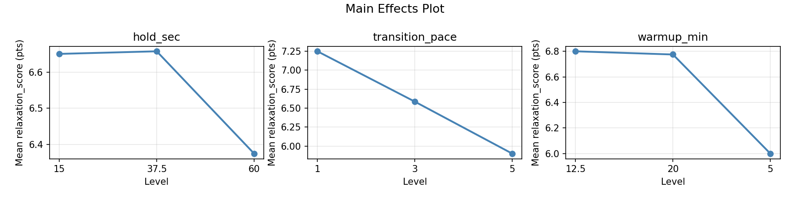
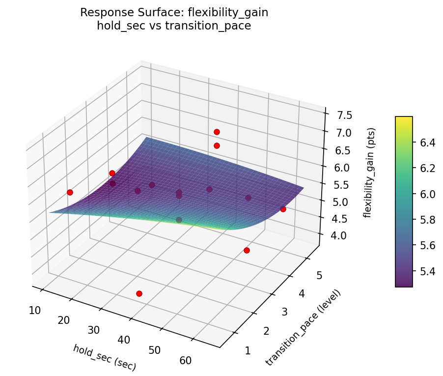
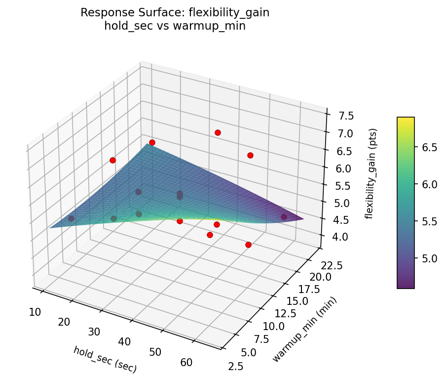
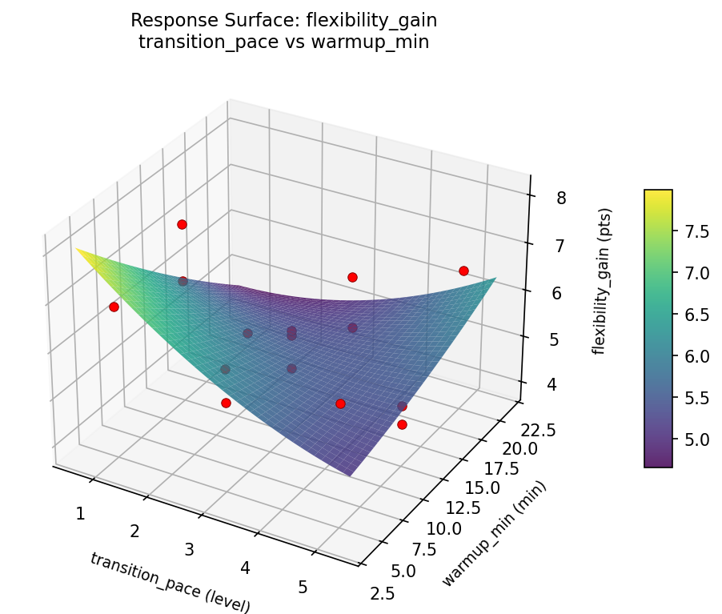
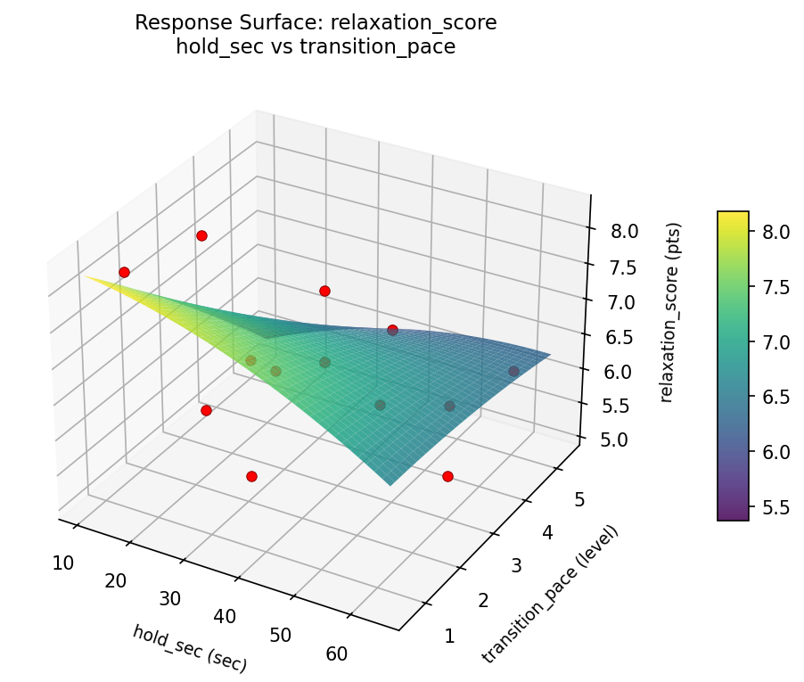
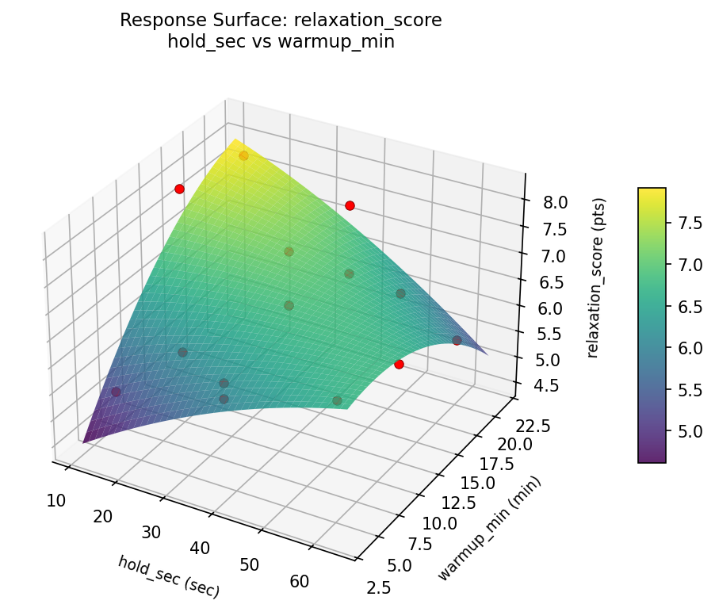
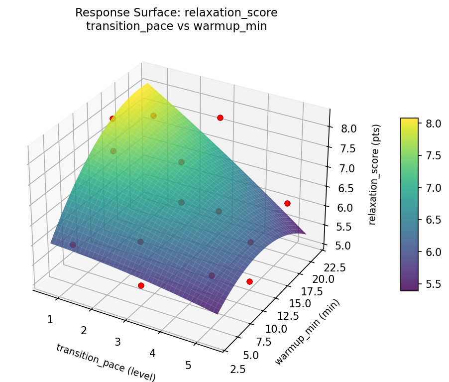

Experimental Setup
Factors
| Factor | Low | High | Unit |
|---|
hold_sec | 15 | 60 | sec |
transition_pace | 1 | 5 | level |
warmup_min | 5 | 20 | min |
Fixed: session_length = 60min, level = intermediate
Responses
| Response | Direction | Unit |
|---|
flexibility_gain | ↑ maximize | pts |
relaxation_score | ↑ maximize | pts |
Configuration
{
"metadata": {
"name": "Yoga Sequence Design",
"description": "Box-Behnken design to maximize flexibility gain and relaxation by tuning hold duration, transition speed, and warmup length"
},
"factors": [
{
"name": "hold_sec",
"levels": [
"15",
"60"
],
"type": "continuous",
"unit": "sec"
},
{
"name": "transition_pace",
"levels": [
"1",
"5"
],
"type": "continuous",
"unit": "level"
},
{
"name": "warmup_min",
"levels": [
"5",
"20"
],
"type": "continuous",
"unit": "min"
}
],
"fixed_factors": {
"session_length": "60min",
"level": "intermediate"
},
"responses": [
{
"name": "flexibility_gain",
"optimize": "maximize",
"unit": "pts"
},
{
"name": "relaxation_score",
"optimize": "maximize",
"unit": "pts"
}
],
"settings": {
"operation": "box_behnken",
"test_script": "use_cases/217_yoga_sequence/sim.sh"
}
}
Experimental Matrix
The Box-Behnken Design produces 15 runs. Each row is one experiment with specific factor settings.
| Run | hold_sec | transition_pace | warmup_min |
|---|
| 1 | 37.5 | 1 | 5 |
| 2 | 37.5 | 3 | 12.5 |
| 3 | 60 | 3 | 20 |
| 4 | 60 | 3 | 5 |
| 5 | 37.5 | 3 | 12.5 |
| 6 | 37.5 | 3 | 12.5 |
| 7 | 15 | 3 | 20 |
| 8 | 60 | 1 | 12.5 |
| 9 | 37.5 | 1 | 20 |
| 10 | 60 | 5 | 12.5 |
| 11 | 15 | 3 | 5 |
| 12 | 37.5 | 5 | 20 |
| 13 | 15 | 1 | 12.5 |
| 14 | 15 | 5 | 12.5 |
| 15 | 37.5 | 5 | 5 |
Step-by-Step Workflow
1
Preview the design
$ python doe.py info --config use_cases/217_yoga_sequence/config.json
2
Generate the runner script
$ python doe.py generate --config use_cases/217_yoga_sequence/config.json \
--output use_cases/217_yoga_sequence/results/run.sh --seed 42
3
Execute the experiments
$ bash use_cases/217_yoga_sequence/results/run.sh
4
Analyze results
$ python doe.py analyze --config use_cases/217_yoga_sequence/config.json
5
Get optimization recommendations
$ python doe.py optimize --config use_cases/217_yoga_sequence/config.json
6
Generate the HTML report
$ python doe.py report --config use_cases/217_yoga_sequence/config.json \
--output use_cases/217_yoga_sequence/results/report.html
Features Exercised
| Feature | Value |
|---|
| Design type | box_behnken |
| Factor types | continuous (all 3) |
| Arg style | double-dash |
| Responses | 2 (flexibility_gain ↑, relaxation_score ↑) |
| Total runs | 15 |
Analysis Results
Generated from actual experiment runs using the DOE Helper Tool.
Response: flexibility_gain
Top factors: warmup_min (52.2%), transition_pace (30.8%), hold_sec (16.9%).
Pareto Chart

Main Effects Plot

Response: relaxation_score
Top factors: transition_pace (55.5%), warmup_min (32.9%), hold_sec (11.6%).
Pareto Chart

Main Effects Plot

Response Surface Plots
3D surfaces fitted with quadratic RSM. Red dots are observed data points.
flexibility gain hold sec vs transition pace

flexibility gain hold sec vs warmup min

flexibility gain transition pace vs warmup min

relaxation score hold sec vs transition pace

relaxation score hold sec vs warmup min

relaxation score transition pace vs warmup min

Full Analysis Output
RSM surface: rsm_flexibility_gain_hold_sec_vs_transition_pace.png
RSM surface: rsm_flexibility_gain_hold_sec_vs_warmup_min.png
RSM surface: rsm_flexibility_gain_transition_pace_vs_warmup_min.png
RSM surface: rsm_relaxation_score_hold_sec_vs_transition_pace.png
RSM surface: rsm_relaxation_score_hold_sec_vs_warmup_min.png
RSM surface: rsm_relaxation_score_transition_pace_vs_warmup_min.png
=== Main Effects: flexibility_gain ===
Factor Effect Std Error % Contribution
--------------------------------------------------------------
warmup_min 0.9250 0.2442 52.2%
transition_pace 0.5464 0.2442 30.8%
hold_sec 0.3000 0.2442 16.9%
=== Summary Statistics: flexibility_gain ===
hold_sec:
Level N Mean Std Min Max
------------------------------------------------------------
15 4 5.5000 0.7257 4.5000 6.2000
37.5 7 5.7143 1.0007 3.9000 6.8000
60 4 5.8000 1.2570 4.7000 7.4000
transition_pace:
Level N Mean Std Min Max
------------------------------------------------------------
1 4 6.0750 1.5305 3.9000 7.4000
3 7 5.5286 0.5155 4.7000 6.2000
5 4 5.5500 1.0083 4.5000 6.6000
warmup_min:
Level N Mean Std Min Max
------------------------------------------------------------
12.5 7 5.6429 0.9744 4.5000 7.4000
20 4 5.2500 1.1902 3.9000 6.6000
5 4 6.1750 0.5315 5.5000 6.8000
=== Main Effects: relaxation_score ===
Factor Effect Std Error % Contribution
--------------------------------------------------------------
transition_pace 1.3500 0.2456 55.5%
warmup_min 0.8000 0.2456 32.9%
hold_sec 0.2821 0.2456 11.6%
=== Summary Statistics: relaxation_score ===
hold_sec:
Level N Mean Std Min Max
------------------------------------------------------------
15 4 6.6500 1.6258 5.1000 8.2000
37.5 7 6.6571 0.6579 5.9000 7.6000
60 4 6.3750 0.7974 5.5000 7.4000
transition_pace:
Level N Mean Std Min Max
------------------------------------------------------------
1 4 7.2500 0.9678 5.9000 8.2000
3 7 6.5857 0.9442 5.4000 7.9000
5 4 5.9000 0.5354 5.1000 6.2000
warmup_min:
Level N Mean Std Min Max
------------------------------------------------------------
12.5 7 6.8000 1.0344 5.1000 8.2000
20 4 6.7750 1.1177 5.5000 7.9000
5 4 6.0000 0.4690 5.4000 6.5000
Pareto chart (flexibility_gain): use_cases/217_yoga_sequence/results/analysis/pareto_flexibility_gain.png
Pareto chart (relaxation_score): use_cases/217_yoga_sequence/results/analysis/pareto_relaxation_score.png
Main effects (flexibility_gain): use_cases/217_yoga_sequence/results/analysis/main_effects_flexibility_gain.png
Main effects (relaxation_score): use_cases/217_yoga_sequence/results/analysis/main_effects_relaxation_score.png
Optimization Recommendations
=== Optimization: flexibility_gain ===
Direction: maximize
Best observed run: #3
hold_sec = 37.5
transition_pace = 3
warmup_min = 12.5
Value: 7.4
RSM Model (linear, R² = 0.2477, Adj R² = 0.0426):
Coefficients:
intercept +5.6800
hold_sec +0.0375
transition_pace -0.1625
warmup_min -0.6000
RSM Model (quadratic, R² = 0.4696, Adj R² = -0.4851):
Coefficients:
intercept +5.9000
hold_sec +0.0375
transition_pace -0.1625
warmup_min -0.6000
hold_sec*transition_pace -0.4750
hold_sec*warmup_min +0.0000
transition_pace*warmup_min -0.3500
hold_sec^2 -0.1125
transition_pace^2 +0.2375
warmup_min^2 -0.5375
Curvature analysis:
warmup_min coef=-0.5375 concave (has a maximum)
transition_pace coef=+0.2375 convex (has a minimum)
hold_sec coef=-0.1125 concave (has a maximum)
Notable interactions:
hold_sec*transition_pace coef=-0.4750 (antagonistic)
transition_pace*warmup_min coef=-0.3500 (antagonistic)
Predicted optimum (from linear model):
hold_sec = 37.5
transition_pace = 1
warmup_min = 5
Predicted value: 6.4425
Model quality: Weak fit — consider adding center points or using a different design.
Factor importance:
1. warmup_min (effect: 1.2, contribution: 67.6%)
2. transition_pace (effect: 0.4, contribution: 25.2%)
3. hold_sec (effect: 0.1, contribution: 7.2%)
=== Optimization: relaxation_score ===
Direction: maximize
Best observed run: #8
hold_sec = 15
transition_pace = 1
warmup_min = 12.5
Value: 8.2
RSM Model (linear, R² = 0.2592, Adj R² = 0.0572):
Coefficients:
intercept +6.5800
hold_sec -0.1125
transition_pace -0.6125
warmup_min +0.1500
RSM Model (quadratic, R² = 0.3806, Adj R² = -0.7343):
Coefficients:
intercept +6.3667
hold_sec -0.1125
transition_pace -0.6125
warmup_min +0.1500
hold_sec*transition_pace +0.5500
hold_sec*warmup_min -0.1750
transition_pace*warmup_min +0.0750
hold_sec^2 +0.1417
transition_pace^2 +0.0917
warmup_min^2 +0.1667
Curvature analysis:
warmup_min coef=+0.1667 convex (has a minimum)
hold_sec coef=+0.1417 convex (has a minimum)
transition_pace coef=+0.0917 negligible curvature
Notable interactions:
hold_sec*transition_pace coef=+0.5500 (synergistic)
Predicted optimum (from linear model):
hold_sec = 37.5
transition_pace = 1
warmup_min = 20
Predicted value: 7.3425
Model quality: Weak fit — consider adding center points or using a different design.
Factor importance:
1. transition_pace (effect: 1.2, contribution: 69.6%)
2. warmup_min (effect: 0.3, contribution: 17.0%)
3. hold_sec (effect: 0.2, contribution: 13.4%)